有句话说，短期合作看“利益”，长期合作看“价值观”，虽然天星教育跟华与华的合作刚进入第二年，但是我们是典型的第二类合作，两家的结缘非常有趣：
2022 年 8 月，天星教育正式和华与华开启合作，创造了教辅图书出版行业与战略营销品牌咨询公司合作的先例。经过 1 年多的合作，天星教育董事长杜志建先生由衷地感叹道：“找华与华真的是太值了！他们不但给我们提供战略方向，还给我们提供落地解决方案！”一年多的时间里，华与华为天星教育做了哪些工作？本期文章，我们将从 3 个方面为你展开介绍：
1 、从产品明星到企业品牌，用“华与华品牌三角形理论”完成天星教育品牌定型和统一：1 ）发挥品牌与生俱来的戏剧性，“天星老师”超级符号为天星建立品牌资产储蓄罐；2 ）“上课认真听，下课练天星”，品牌谚语嫁接每个人都经历过的文化母体场景；3 ）购买理由、购买指南、购买指令！重新开发天星一亿册教辅图书产品。2 、聚焦教室、老师办公室、校边书店，“两室一店”全面媒体化战略，让天星品牌无处不在！3 、战略定心“天星高考”，用创意引爆战略，开发公关产品“高考考情大会”。
项目背景2023 年全国高考报名人数为 1291 万人，相比 2022 年增加了 98 万人，再创历史新高，今年上海高考人数 5 . 1 万人，北京 5 . 4 万人，河南 131 万人。
但同期录取率却有巨大的反向差别：一本录取率上海为 36 . 14 %、北京为 46 . 29 %，而河南仅为 9 . 9 %，上海、北京四百多分就能上一本，河南就要五六百分。网上老说河南的高考是地狱级的，这个地狱级其实就是教育资源的差异带来的。
哪里的考生多、高考竞争激烈，哪里的教辅市场就越发达，因为教辅图书的价值就在于把优质的教育思想和内容普及到全国各地，它们是学科教材以外的针对性补充性材料，包括练习题、解析、总结、重点难点解析等内容和形式，可以帮助学生更好的理解学科知识、增强自学能力、提高学习成绩！创立于 1998 年的天星教育就是这样一家教辅图书出版和提供教育信息服务的企业。在25 年的发展过程中，也有很多来自其他领域的诱惑，但是天星一直专注在教辅赛道，积累至今，掌握了该领域的“超级数据库”： 1000 +产品研发人员、 10000 +全国名校编委老师、 0 差错百万题库，并在智慧教育领域也走在实践前沿。旗下 5 大产品系列《金考卷》《教材帮》《一遍过》《试题调研》和《疯狂阅读》，在全国各地的小学、初中、高中校园内随处可见。
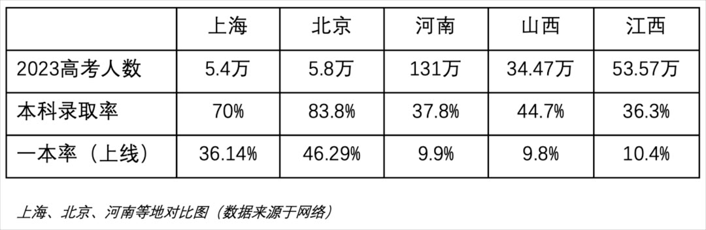
但是项目组走访市场时发现，“天星教育”或“天星”品牌却少有人知道。这是因为在此之前，天星推行的一直是塑造“明星产品”的做法，单个产品很出名，但是天星品牌却名不见经传，甚至在有些图书封面上都很难看到“天星教育”的标志。这一问题也成为华与华为天星教育解决的第一个课题。
1从“明星产品”到“企业品牌”完成天星教育品牌定型在找华与华之前，天星教育面临的内卷问题，不仅在教辅图书行业内部，更在企业内部自身各产品之间。天星教育明星产品强过企业品牌，企业内部按照不同的产品线操作，这在造成营销资源重叠与与浪费的同时，也提高了消费者的选择与决策成本。即使是在天星教育相对具有优势的高中和高考市场，天星教育各产品仍未形成合力，依然有巨大的排除浪费和提升空间。那么，如何让各产品形成合力？让每一本天星教辅图书在销售自我的同时也强化消费者对天星品牌的认知呢？
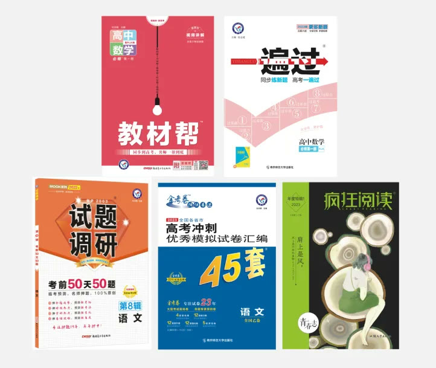
首要做的就是为天星构建起一套可供消费者识别、记忆、谈说的词语、符号、话语和故事而这些就是天星教育的“品牌三角形”：品牌谚语（话语体系）、超级符号（符号系统）、拳头产品（产品结构）。借此将天星教育各个产品统归到天星教育品牌之下，将各个产品的包装、传播资源进行整合统一。
这就应用到华与华的两大核心技术：词语的技术（品牌修辞学）、符号的技术（超级符号）。嫁接文化母体词语，轻松绕开消费者的心理防线，创意管用100年的品牌谚语华与华创意品牌谚语，用的就是品牌修辞学，其本质上是要找到文化母体，再把品牌嫁接上去。那什么是文化母体呢？文化母体就是人类的文化契约，是人类共同的经验和知识，是我们生活中循环往复、不断重复的那一部分，是我们与生俱来的、祖先传下来的、每个人都知道的，而且每个人的观念和行为都会受其影响，甚至会受其操控的文化契约。所以，把文化母体的原力注入到品牌话语当中，就能降低营销传播的成本，突破顾客的心理防线。华与华的典型的代表案例就是“爱干净、住汉庭”。“爱干净”是小时候妈妈经常说的，它是属于大多数人的文化母体行为词语，嫁接品牌名的同时，又能形成押韵，消费者就没有心理防线了！
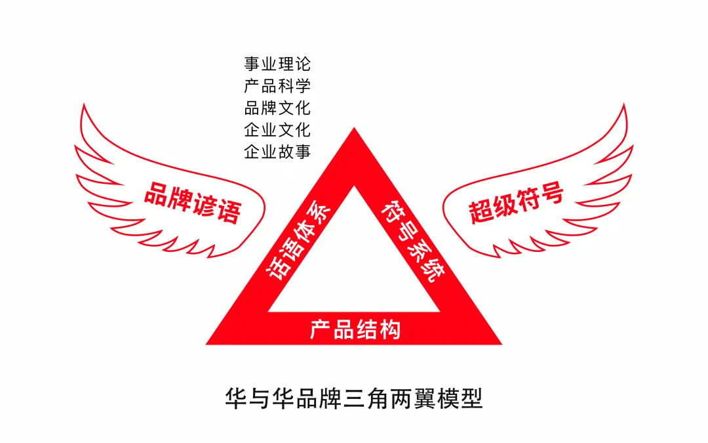
要想寻找到合适的文化母体，首先就要了解华与华超级符号哲学模型。
这个模型的底层就是人的知觉框架。知觉框架，就是把我们感官所接触到的信息，处理成经验的框架。康德提出过一个问题：你把接触到的信息处理、提炼成“经验”的能力，是从哪里学来的？这种没有任何人教，是我们天生就有的能力，就被称为“先验主义”，先于经验。
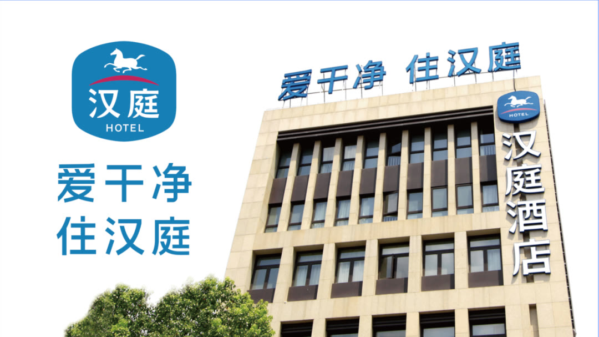
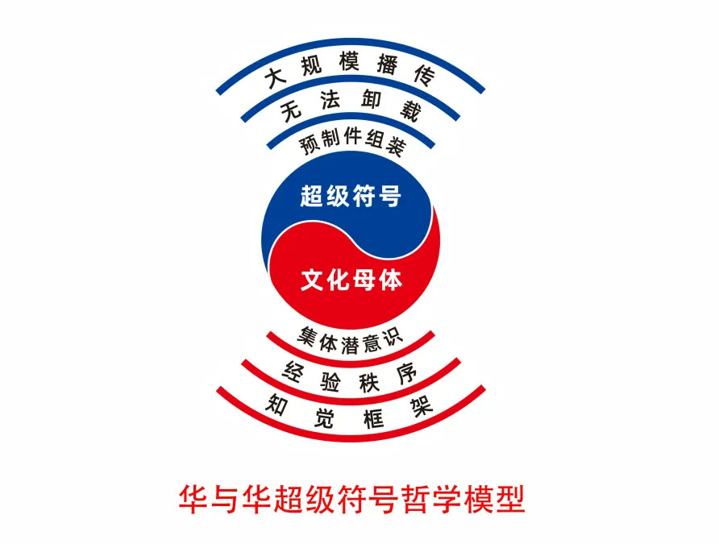
先验主义哲学认为“人的一切知识都是从实践中来的，从实践中得到经验，然后就有了知识，随后才形成理论。”所以，从逻辑和哲学的底层来进行理解：就是由知觉框架开始，将信息处理成经验，最后形成一个经验的秩序。在华与华，不管是超级符号还是品牌谚语，我们都希望它是由来源于文化母体的“预制件”编织而成的。预制件就是标准件，如果你编织出的东西符合人的经验秩序，那它也就能轻而易举地进入大众的经验秩序。并且一旦组装，它就无法卸载，这就是我们常说的“过目不忘”“过耳不忘”。回到天星教育的品牌谚语，我们为天星教育创意了“上课认真听，下课练天星”！
“上课要认真听讲啊！”这句话，想必大家并不陌生！小时候，我们是听着这句话长大的；长大后，我们又说着这句话陪伴孩子长大，当孩子们踏入校园的第一天起，就能听到老师、家长的叮嘱：“上课要认真听啊！”。如果放在整个人生历程来看，随着我们从父母的孩子，变成孩子的父母，我们每个人都听过这句话、也都会说起这句话，它就是我们要找的文化母体词语、话语，而且它紧跟我们产品的使用场景——教室、家庭。
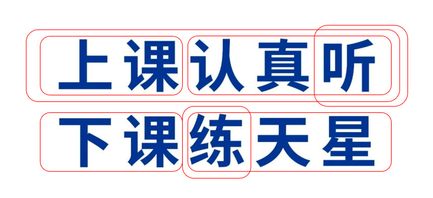
当我们用“上课认真听”这句有文化原力的话语，唤醒消费者的时候，接下来就要用最快的速度，递给他一个购买指令，用“下课练天星”，催促他产生行动。“上课...下课...”“上课认真听，下课…”，组装到一起就能轻易地绕过消费者的心理防线，因为这句品牌谚语中，除了“天星”二字，其他每一个都是都是经验秩序、都是文化母体，都是预制件。“下课练天星”，用“练”字代表了教辅品类属性，并与教辅最重要的 KOL ——老师，形成行动配合，“上课听...下课练...”。整句品牌谚语，都对账且押韵，郎朗上口，让“天星”的品牌不胫而走。发挥品牌与生俱来的戏剧性，创意天星教育超级符号“天星老师”“天星”，顾名思义，就是“天上的星星”，挖掘品牌名与生俱来的戏剧性，所以天星的超级符号它就应该是一颗星星！
但只有“星星”还不够，超级符号还应该具备品类自明性，我们把最能代表好成绩的“ 100 分”、批改作业时“对号”，融入其中。
就创造出了专属于天星教育的超级符号，一个有原力、有行业特性、让人印象深刻的“天星老师”。
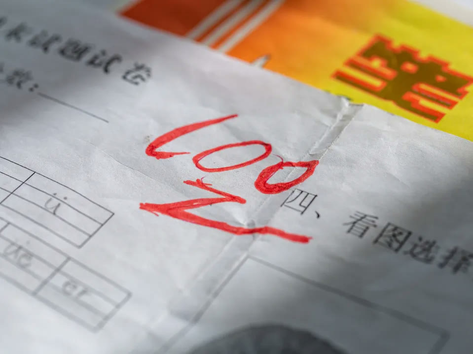
除此之外，我们也结合学生们在上课时最常见的符号元素“黑板”，对天星教育的符号系统做了丰富补充——把招牌变成黑板、把海报变成黑板，把天星教育常见的画面版式，都变成了黑板。
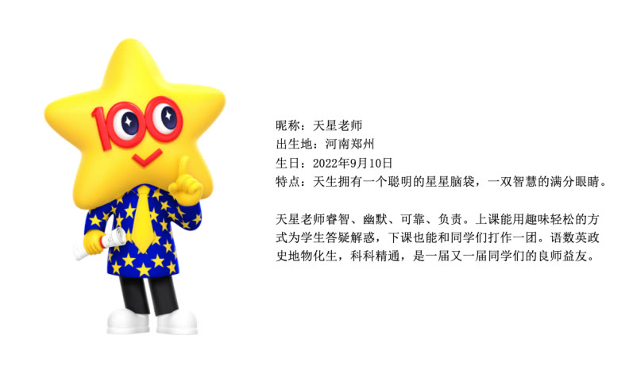
通过完全取材于学习场景中的经典元素来构建天星的符号系统，这样就极大地降低了营销传播的成本，一看就是教育行业、一看就是跟学习相关的，再对应品牌谚语和超级符号，整个品牌传播的效率就极大地提高了，品牌资产的积累就有处可存了。
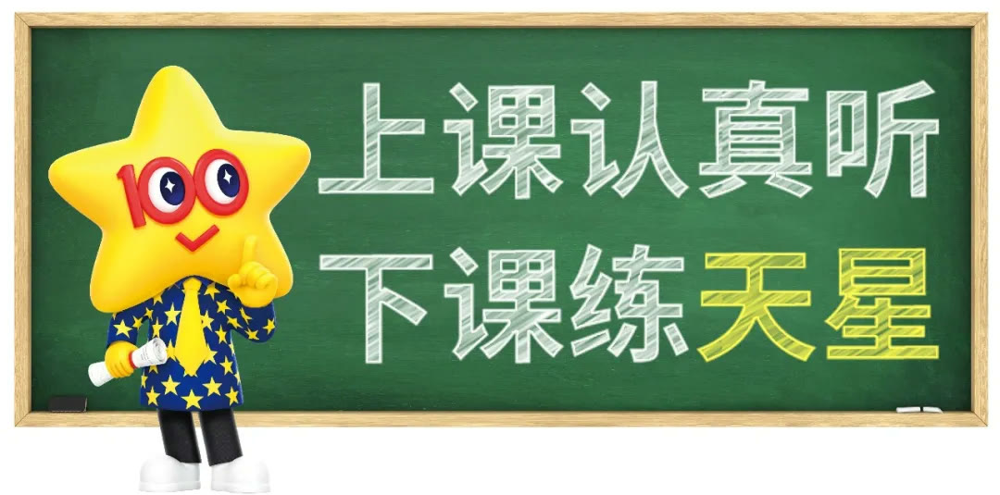
2022 年 12 月 9 日，天星教育全网官宣品牌谚语和超级符号，粗略统计，天星教育公众号评论好评率 95 %以上！
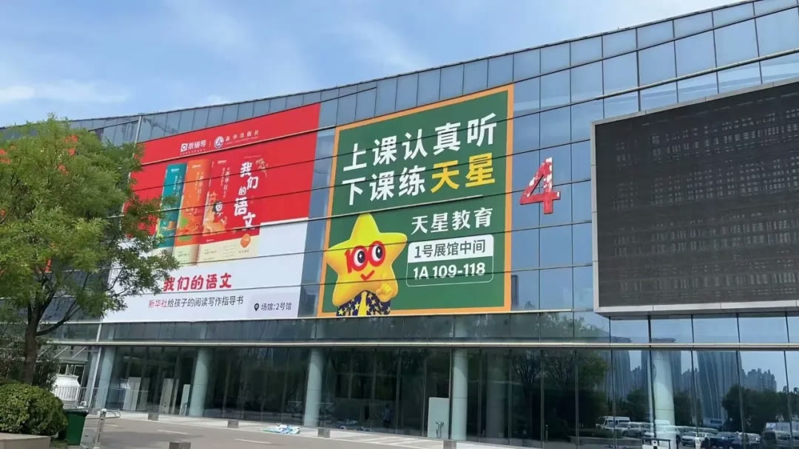
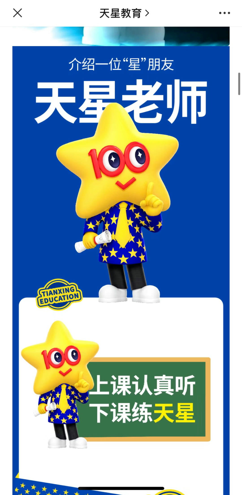
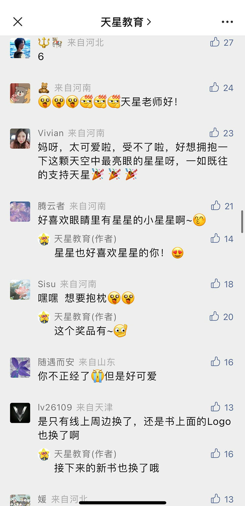
2购买理由、购买指令、购买指南重新设计天星产品组合和购买逻辑教辅图书的一个特点是一个品种要延伸到科目、年级、版本、地区等多个维度。因此天星教育的图书品种有 100 多个，每年的 SKU 数量在 2000 以上，一年的销售量可以达到上亿册。这也成为学生、家长，乃至老师面对天星时的最大困扰，怎么样在众多的产品中做出选择？这也是天星教育在营销端的重要课题。在华与华，包装设计从来不只是设计师的工作，它是一个“局部包含全部”的课题，一个包装实际上包含了所有的营销策略。我们认为，一个完整的包装文本信息至少要包含三个方面的内容：购买理由、购买指令、购买指南。因为大多数时候你卖的东西大多数顾客不知道怎么购买？因为消费者的选择太多了，你要降低消费者的选择成本，帮他决策，就要提供给他购买理由和购买指南，最后再给他一个购买指令。
对于教辅产品而言，时间线是天然的选择逻辑和购买指南，跟着学校的教学大纲或者老师的教学计划，到什么时间看什么书，做什么题，有一个相对明确的时间节奏。基于此，华与华在产品层面，就为天星高考产品重新设计了选择和购买的逻辑——“高考倒计时，先看天星刷题表”。“高考倒计时”是一个极具信号能量的文化母体词语，借助它，天星可以吸引所有相关的人群关注自己，因为每一个处于高三阶段的学生/家长/老师都会进入“高考倒计时”阶
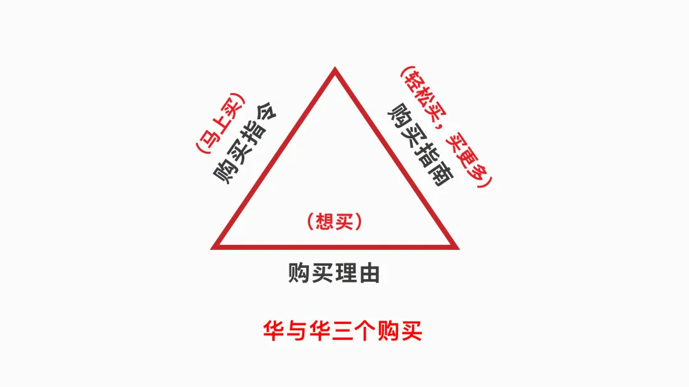
段，都会受它的信号刺激，进入“备考”状态。这种情况下，再提供一个“先看天星刷题表”的购买指南，应用于终端陈列、图书封面、宣传物料，接收到的人就自动对号入座，——对应时间段，选择对应产品了！1 月，高三一轮复习基本结束，第一学期的期末考试很重要。2 月，开学后进行一模考试，是高中阶段成绩的重要参考，初步定位。3 月，强化训练，处理综合题，掌握常规出题思路，做到基本常规大题十拿九稳。4 月，进行高考二模考试，模考目的是提高学生的综合能力、应变能力乃至承受能力。5 月，最后的复习机会，确定目标后，有针对性地选择重点方向提高。6 月，迎战高考，注意饮食、放松心情很重要！7 月、 8 月，志愿填报及录取公布。
用产品开发的方法重新设计封面，让1亿册图书发挥1亿个产品自媒体功能华与华把媒体分为两种：一种是元媒体，就是不用额外花钱就能做的媒体，比如企业自己的产品、包装、门店，甚至包括企业自己的工厂、员工等等，这些媒体本来就在，无
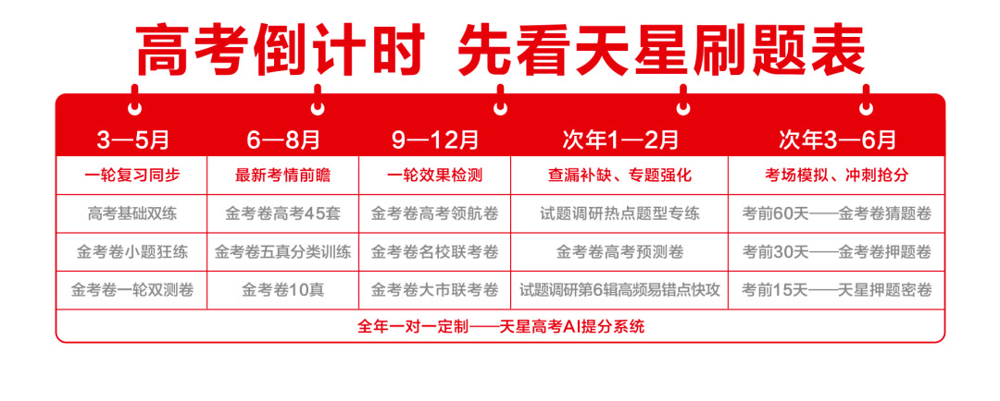
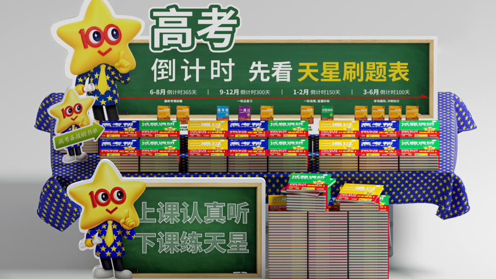
需额外付出更多的成本。另外一种是延伸媒体，就是花钱才能做的媒体，包括平面广告、电视广告、新媒体广告等等，需要花钱购买他人的宣传资源。相比延伸媒体，华与华认为开发好企业自身的元媒体才是更重要的事情。对于图书出版公司来说，最重要的元媒体无疑更是图书封面。尤其是与传统图书有着巨大差异的教辅图书，一上市就在书店货架上被发现、被拿起、被购买，尤为重要。教辅图书与传统图书最大的差异是图书的“生命周期”：传统图书发售之后可以一直卖下去，无论什么时候都可能对上用户的需求，触发购买。而教辅图书，生命周期大部分就是一年，甚至是一学期乃至更短的时间，因为每一年的考情都在变化，每一年的图书都需要重新编辑。怎么解决这一问题呢？一切的答案都在现场！项目启动初期，项目组选择了一家典型的书店进行定点观察，观测消费者是如何一步一步选择教辅图书的。经过一个星期的观察，有 2 个重要发现：1 ）教辅图书的购买决策更为谨慎，所用决策时间是传统图的书 5 倍以上。项目组终端调研发现消费者购买一本教辅书的平均时间在 5 分钟以上，远远超过传统图书所用时间。2 ）相比传统图书不用对比就选择，教辅图书平均对比 4 本竞品才做决策。并且会来来回回翻阅平均 4 本以上的图书，每本图书的停留时间都在 1 分钟以上。除此之外，跟大部分的购买场景一样，教辅图书的消费者有两种：有明确需求的、没明确需求的。有明确需求的，进店就购买，这类消费者要么就是已经习惯使用了某个品牌的教辅用书，要么就是通过老师或同学推荐或指定购买。没有明确需求的，这类消费者往往在终端完全不知道怎么选择教辅用书，没有挑选教辅书的标准。
对于没有明确需求的消费者来说，教辅图书的封面在终端货架体现的作用更为明显，哪一个封面可以提供更加完善的购买理由、购买指南和购买指令，消费者就是更会倾向于选择哪个教辅产品。因此在品牌战略定型之后，项目组上手的第一件事就是给天星的图书产品“改封面”。说是“改封面”，事实上是从产品购买理由、价值体系提炼、购买指令规划，再到产品包装设计，一整套的产品再开发工作。
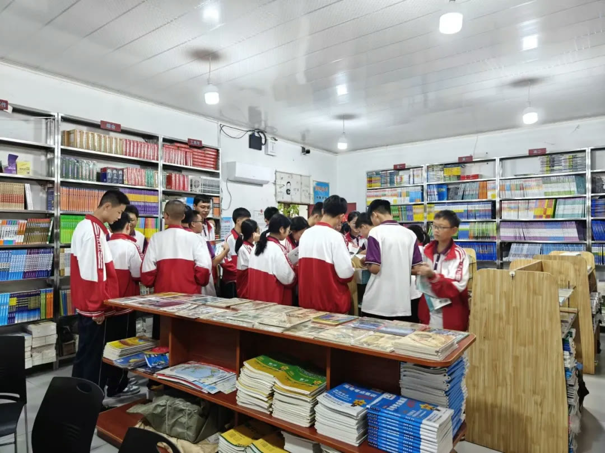
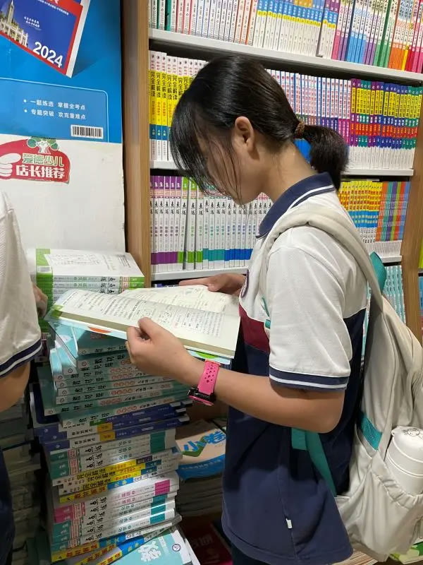
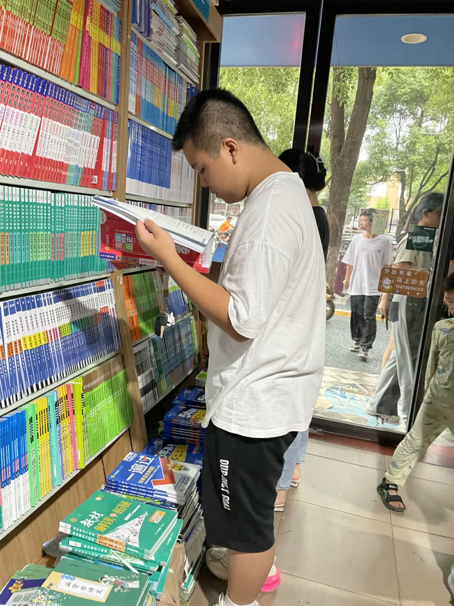
以天星高考教辅产品《高考基础双练》为例，项目组首先和天星产品部门同事深入沟通，了解产品的基础特点——这是一本针对基础题的高考一轮总复习图书，图书创新性地按教材知识点和高考考点 2 个顺序从头到尾地给考生梳理知识，打牢根基。通过一系列调研和研究，项目组为这款产品开发了完整的话语体系和全新的封面视觉体系。
封面设计上，放大了“基础双练”的产品名，设计了将既能表达“双练”，又能表达胜利的手势 V 作为封面的视觉符号，由此在书店获得极强的货架优势，远远地就能看见。同时，项目组为产品重新开发了购买理由 —— “要想提分快，多练基础分！”。购买理由是心里上的打动机制，是和消费者对暗号，对上暗号，引起注意，触发行动。高考生的暗号是什么？项目组发现一轮复习时，高考生普遍会更重视基础分，原因有 3个：1 ）基础题有一定套路，通过刷基础题可以在一轮复习阶段高效掌握知识点；2 ）基础题在高考中分值比重很大，占比接近 80 %；3 ）在考试中基础题占用时间少，得分速度快。由此项目组挖掘了“提分快”这个无论差生、中等生、优等生都能有所反应的“超级暗号”，形成了“要想提分快，多拿基础分！”的购买理由，用“提分快”唤醒消费者，用“多拿基础分”提供解决方案。
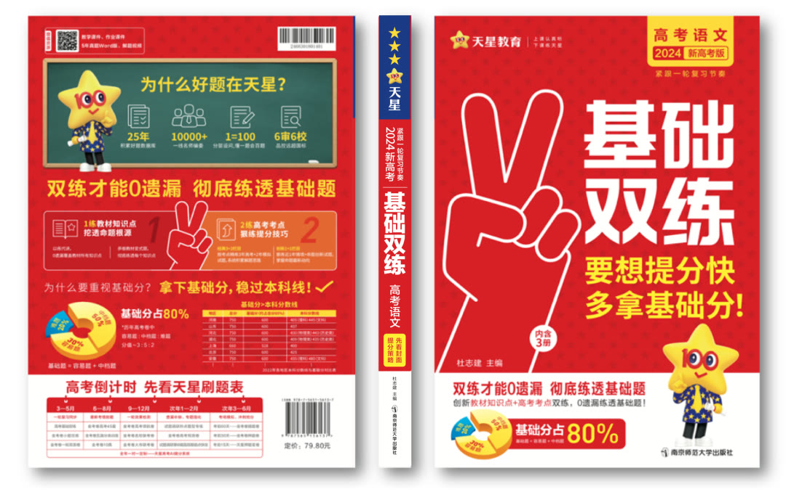
通过《高考基础双练》的设计再开发，项目组为天星图书统一了封面 3 大固有部件：1 ）右下角的超级符号，天星老师就是天星所有图书的第一品牌代言人，所有的图书都要统一标配；2 ）左上角的天星标志和品牌谚语组合，通过一本本图书不断强化“下课练天星”的行动指令；3 ）中间和左下角的产品信息区，放大命名、购买理由、以及关键价值信息，让顾客的决策依据一目了然，通过阅读封面信息就能做出购买决策。封底上方是“为什么好题在天星？”的天星教育企业实力背书，形成所有图书的固有部件。封底的中间是这本书的产品科学信息区域，围绕购买理由提供 3 大证据链：1 ）高考考试分值中，容易题和中档题组成的基础分占比达到 80 %！2 ）各省高考基础分分值高于本科分数线，拿下基础分，稳过本科线！3 ） 1 练教材知识点， 2 练高考考点，双练才能 0 遗漏，彻底练透基础题！
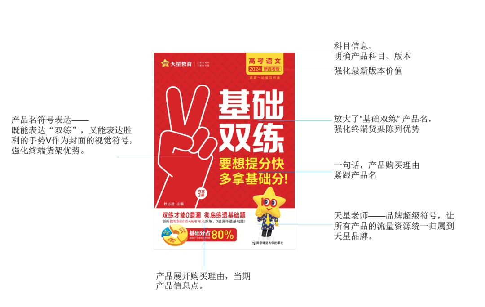
由此形成信息炸药包，让购买者拿着封面畅快阅读，坐着滑滑梯，滑到收银机。而封底则形成购买指南 —— “高考倒计时，先看天星刷题表”。购买指南，是解决怎么选，选哪个的问题，目的是要降低消费者如何买、买更多的决策成本。由此项目组围绕“高考”整个复习时间节奏开发了“天星刷题表”，将高考总复习各个时间阶段对应的天星教辅图书形成一张表，学生再也不用担心不知道怎么选复习资料，看看表就知道。这样通过“天星刷题表”这个平台，天星在卖任何一本书的同时，也都在为其他书宣传，充分实现流量互通。
书脊也划分 3 个区域：1 ）上方天星的花边和品牌标识形成所有书的标板，这样在终端货架上可以形成阵列优势。也同样是重复行为积累的品牌资产储蓄罐—— 时间长了，都知道这块有星星花边的是天星的书，品质有保证。总之是起到统一归口于品牌的作用的。
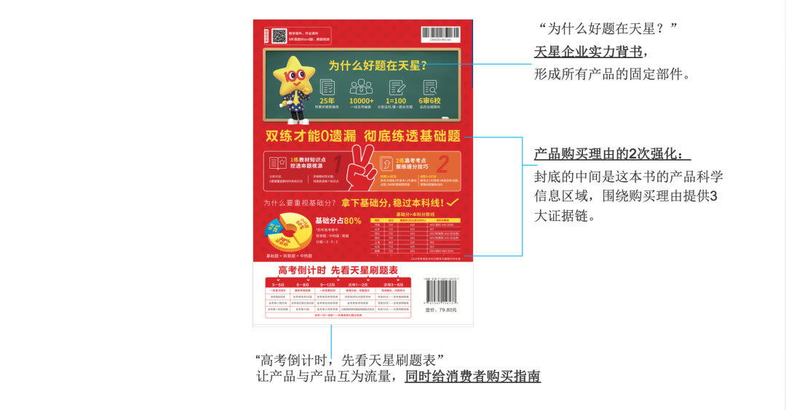

2 ）中部是产品名和核心基础信息，方便消费者在书架上也能快速寻找，同时在有限的空间内再次下达拿起指令 —— “提分策略，先看封面”。3 ）下方则是固定的主编和出版社基础信息。
通过这样的一套产品再开发的逻辑和方法，华与华和天星教育项目组在过去合作的一年中总共为天星完成了 13 款产品的完整话语体系及符号系统的再开发，逐渐让天星的每一个产品封面成为高效的品牌和产品价值传递媒介，并且相互之间互为流量。在《高考基础双练》《一遍过》《高考 45 套》等包装方案成型之后，天星教育董事长杜志建，也给出了统一的反馈：“很满意， 20 年前我最开始做教辅就是把卖点都放到封面上的，后来产品部做着做着就把卖点设计没了。”
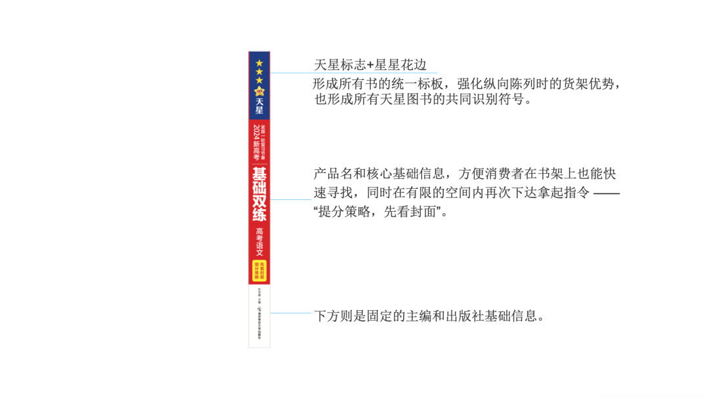
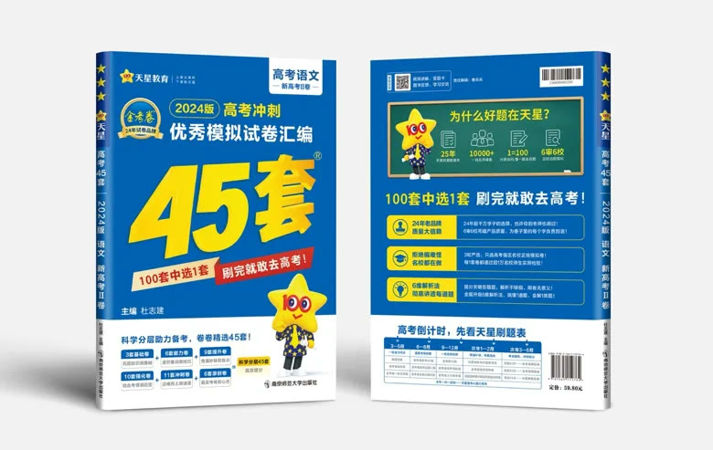
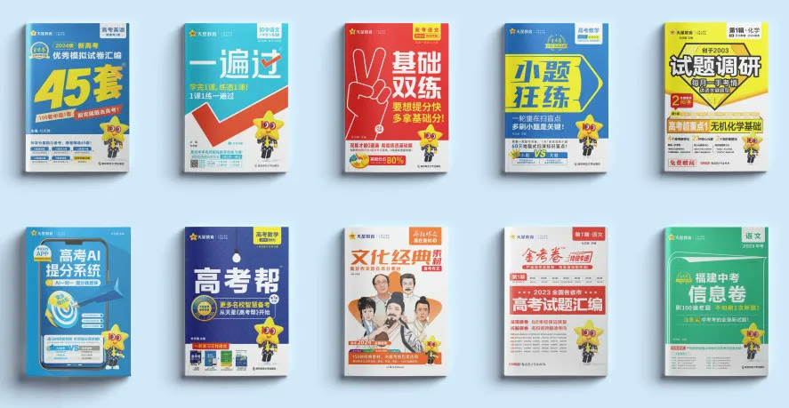
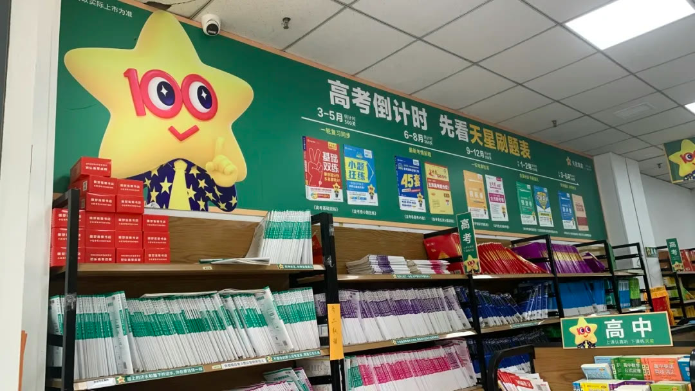
3“两室一店”全面媒体化工程让天星品牌无处不在可口可乐历史上的传道者哈里森·琼斯在 1923 年曾经这样说：“让我们把远离可口可乐，变成不可能发生的事情”。截至今天，可口可乐品牌诞生 138 年了，在这 138 年当中，无论广告的媒介环境怎么变化，有一个营销动作是可口可乐持续在做的，并且非常有效地帮助这个品牌在早期就提升了知名度。那就是大量制作全面媒体化物料：海报、路标、日历、餐厅碗碟、闹钟、铅笔、学生书签以及冷饮柜的玻璃盘子等生活用品上面，在消费者反复使用的同时记住可口可乐！据统计，仅可口可乐一年的品牌周边就足够供全美人民使用上几年的时间。
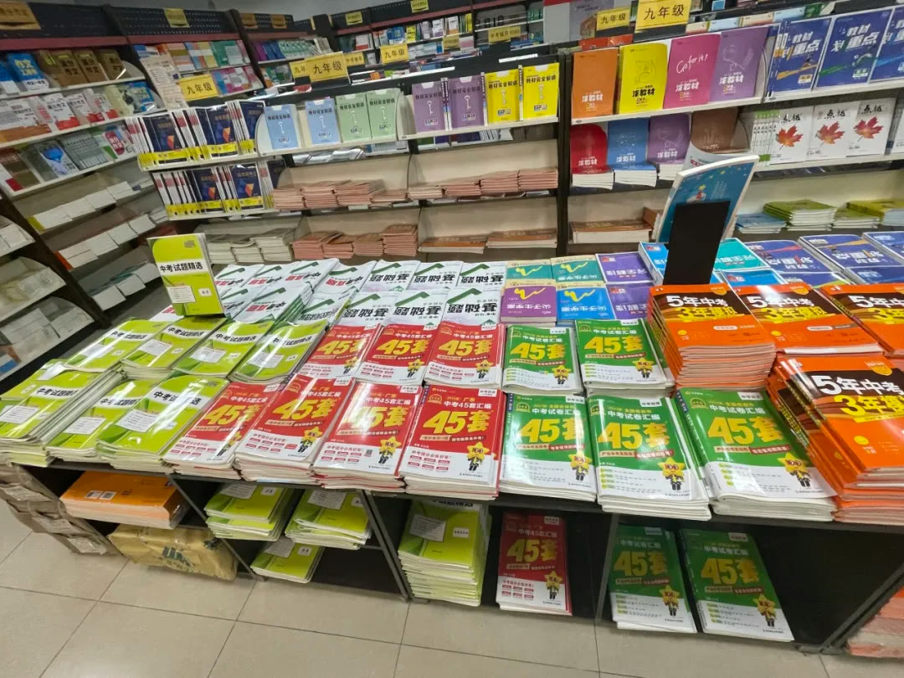
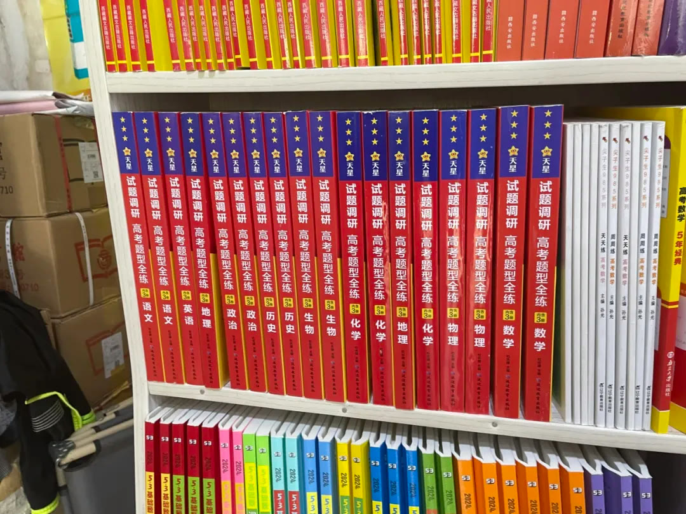
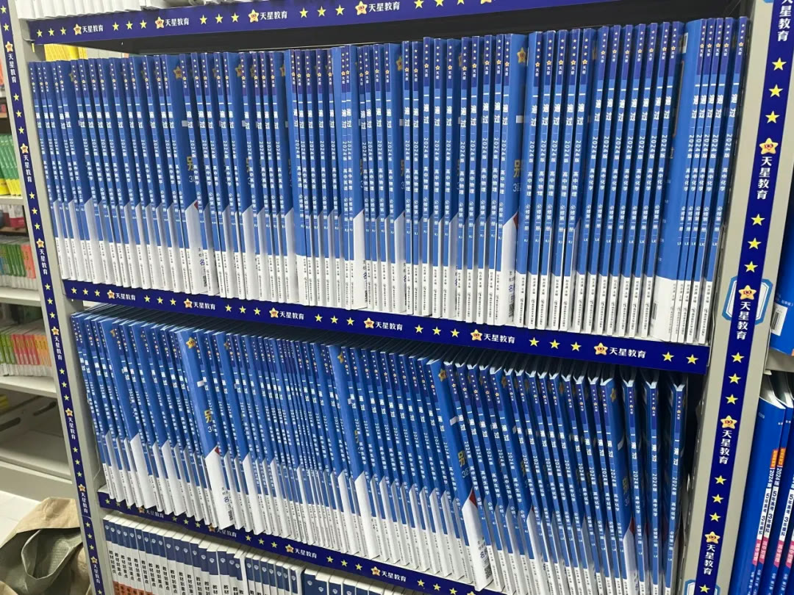
回到教辅图书行业，特点之一就是它的目标受众非常集中，因此项目组提出要着重针对“两室一店”，投入大量的全面媒体化物料，即学生教室、老师办公室、校边书店，通过无处不在的品牌信息建立自己的品牌。首先推进的是针对校边店的全面媒体化，而其中最重要的一个动作抓手就是“刷门头”。因为大部分的校园周边书店位于市内核心位置，它集合了“目标客户/意见领袖——学生/老师”、“销售场所——书店”、“品牌推广阵地”三者于一体。天星通过“刷门头”通过“门头战略”为终端书店提供更好的“街道货架优势”，终端书店强化天星在校园周边的品牌影响力，同时匹配在天星在营销方面给与的资源支持，就让合作的校边书店获益更多！
▲例：郑州书店分布图——大部分集中于市内核心区
华与华认为，街道就是货架，门头就是海报，在争夺来往街道的顾客的注意力。天星的门头在有限的空间内放大超级符号和“天星高考”，强化以高考为切入点的品牌战略，同时放上品牌谚语和“教室黑板”的超级板式，让所有人经过一瞥也能留下深刻印象。
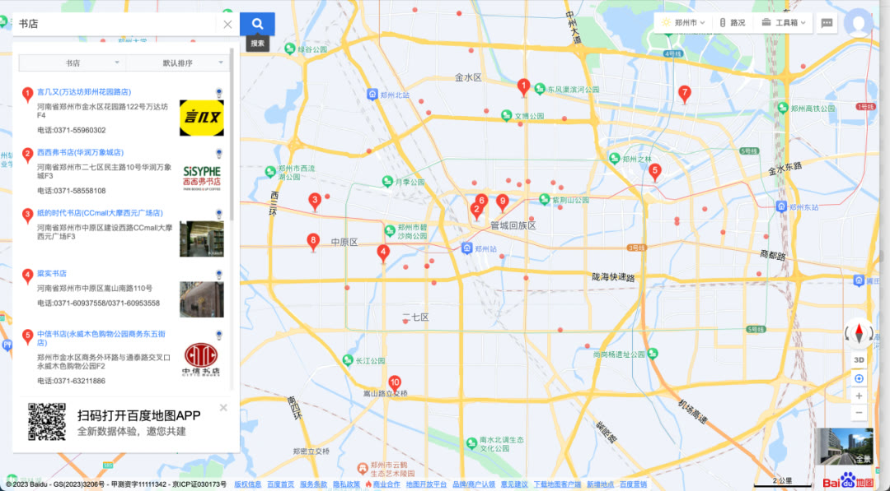
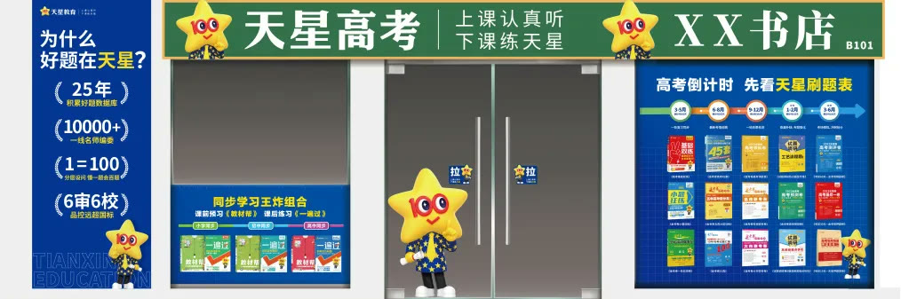
针对合作的校边书店，我们还分别开发了标准物料包，包括核心产品海报、完整的天星刷题表购买指南和一系列带有品牌露出的地贴、楼梯贴、学段牌，把“进入书店看不见天星的品牌”这件事儿变成不可能。目前为止，天星以河南为试点区域，陆续完成了重点高中校边店门头全覆盖。其中一个细节是：在天星教育终端书店全面媒体化工程首店落成后，刚好赶上天星河南经销商会议，参观过样板书店之后，现场超过 9 成经销商当即签约确定落地门头战略。
同样逻辑，围绕学生教室、老师办公室，天星也通过提供实际需要的各类用品的方式，通过售卖或赠送的方式送到学生和老师手中，以此不断加深品牌知名度。
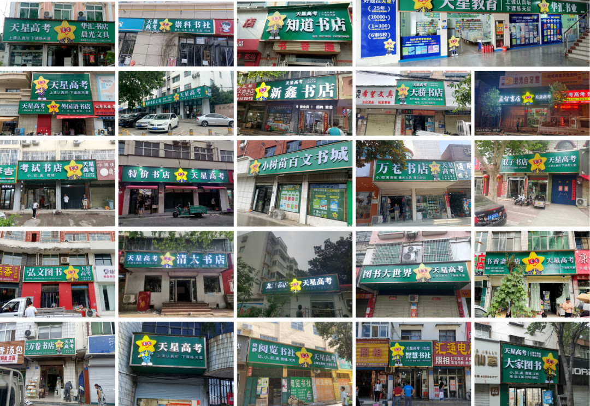
4战略定心“天星高考”修不败兵法，聚焦企业资源做到在某一领域不可撼动！大部分的企业总是想做大、倾向于啥都想要，啥都想要就啥都想伸手，总想扩张到别的地方，这也是企业家的天性！华与华的经营哲学是 “修不败兵法，不要追求最好结果，要追求最不坏。”
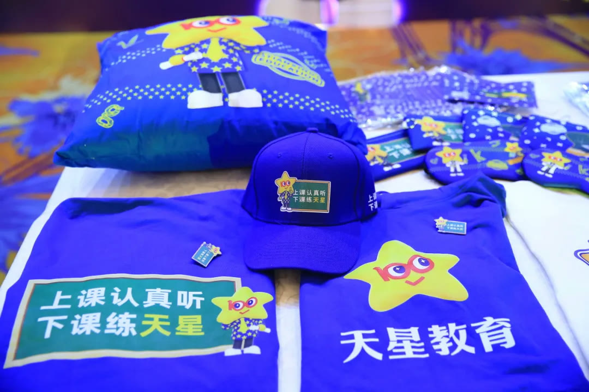
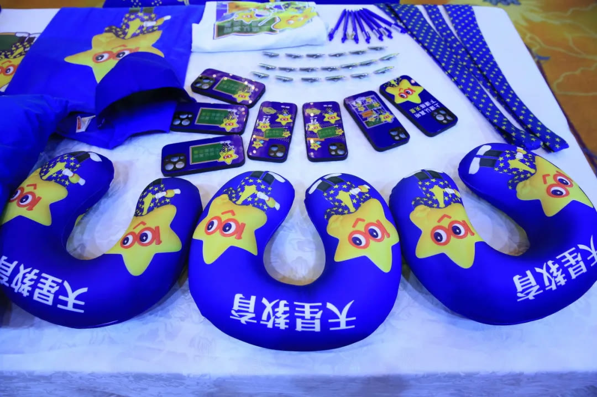
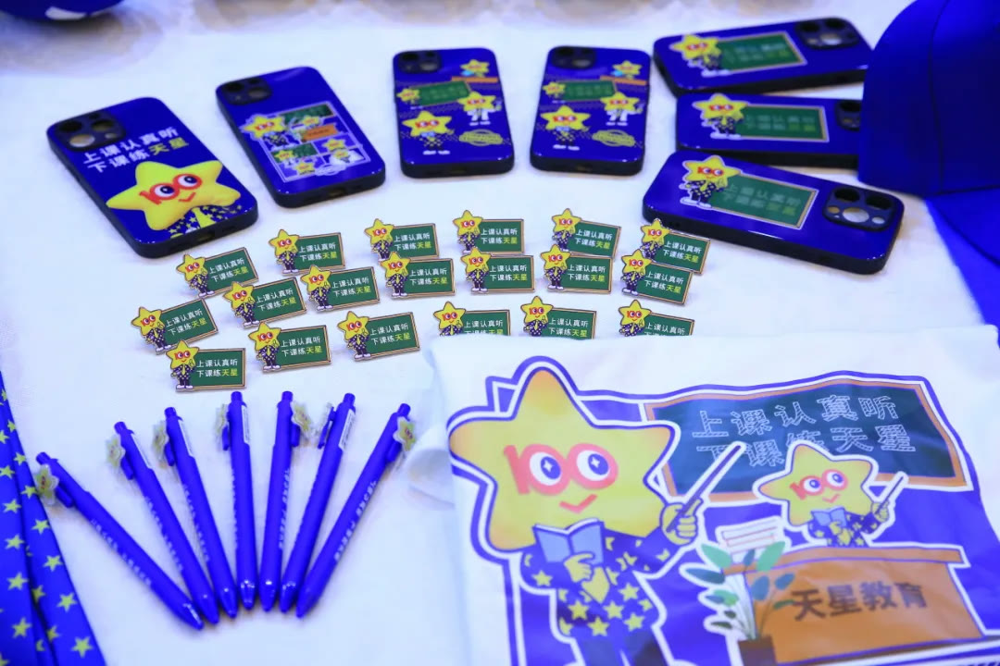
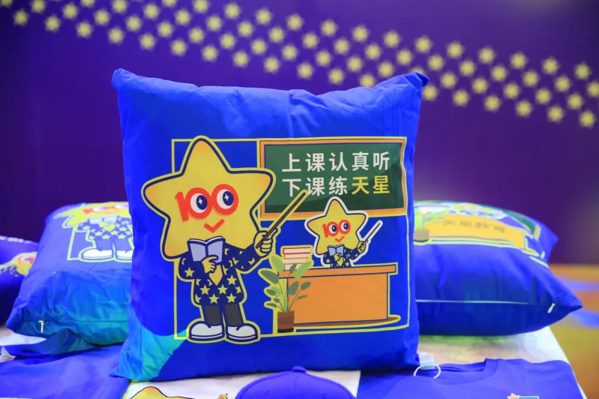
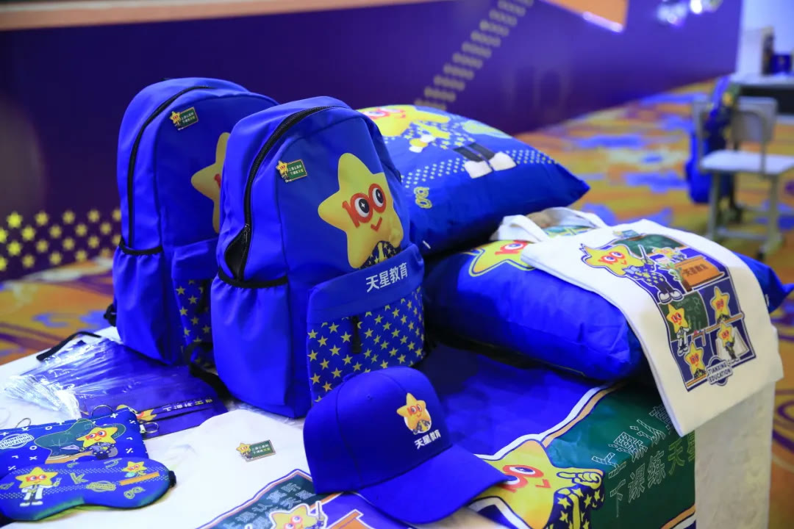
换句话说，就是有一块是我非要不可的，最低的限度是我只要这块也行，但我必须确保这一块必须属于我的，不可撼动。经营企业所追求的，既不是规模，也不是利润，而是“不可撼动”，建立不可撼动的市场价值，哪怕只有一千万，一个亿的规模，但是是谁也无法撼动的，这钱我要挣，就谁也抢不走。不要做到百亿、千亿、万亿，但风一吹就倒了。这就是王阳明说的，我哪怕只有四两，也是百分百纯金，不要搞七八千斤，全是破铜烂铁。这“不可撼动”必须一直保持，任何诱惑都不能撼动“不可撼动原则”。然后，随着日日不断，滴水穿石，如果你建立的价值是真正主流的，先进的，你就能把所有竞争对手全部边缘化，一统天下，好处占尽。这就是孟子说的王道，王天下易如反掌，就是一以贯之的时间积累而已。在盘点天星的业务和产品时，项目组遇到的最大问题就是天星教育的产品太多了，按照天星官网展示，天星教育的产品涵盖整个 K12 教育阶段——小学、初中、高中，从产品线上也分为：金考卷、试题调研、教材帮、一遍过、疯狂阅读、疯狂作文、恐龙迷童书馆、艺考生文化课抢分密码、高考题库。这既是天星教育多年积累的优势，也是天星教育在塑造强势品牌方面的劣势，延续到营销推广端就面临着多产品推广，缺少产品分级的问题，多少造成营销动作的重叠乃至浪费。为了解决这一问题，我们结合天星自身的资源禀赋，以及教辅市场的竞争环境（中考、小学等层面都已经有相对强势的教辅图书品牌、高中阶段同样存在多个品牌在发力，但是天星在高考乃至高中阶段的占有率和影响力稳居前列）。我们为天星教育提出了“聚焦高考”的战略，并专门策划“高考考情大会”，强化天星在高考领域的影响力。
开发服务于行业/社会的公关产品——“高考考情大会”华与华认为，所有行业都是咨询业，所有公司都是咨询公司。只是狭义的咨询公司收咨询费，广义的咨询公司把咨询转化为产品和服务收费，或者提供免费咨询，以产品收费。对于教辅品类来说，首先经营的就是知识，更准确的是“考情”知识。当前的教育体系，通过考试为社会筛选人才是重要的方式，那么针对考试的信息就是重中之重，一方面是教育政策、资讯在实际教育推进中的落地抓手，另一方面也是广大学生老师复习备考的依据，需要上通下达。天星从 1998 年创办之日起，就以“让优质教育资源更均衡”为企业经营使命， 25 年来始终秉持初心推进着解读考情信息的优良传统，先后创办天星教育网、天星教育研究院、教材帮大会等考情服务产品并推出相关教辅图书。由此，项目组为天星教育策划了公关活动产品“高考考情大会”，协助教育机构去传递考情信息、推广考情信息，让更多的教育者、受教者获得更好的教育信息资源。华与华也认为，公关就是企业为社会开发的服务产品，要用产品开发的思维来做公关。而“高考考情大会”就是天星为社会开发的免费服务产品，主要服务 3 方人群：1 ）命题方（教育部、命题专家）—— 服务于最新高考政策、人才选拔政策的普及；2 ）辅考方（学校、老师） —— 服务于拆解最新命题动向、科学安排教学备考；3 ）备考方（学生、家长） —— 服务于应对高考的备考方法、心理状态和专业选择等。高考有可能是我们国家除了“春节”以外最大的文化母体，也是全国人民最大的“共情”时刻！从 6 月 7 日开始的高考时间，从 2003 年就固定了下来，每到这个时候所有的人都
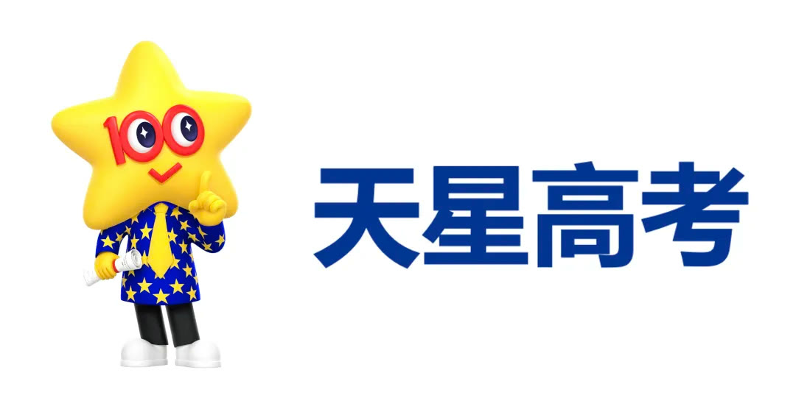
会卷入高考的文化母体当中去，高考那几天，专项政策强势护考：考点周边交通管制、禁止鸣笛、货车改道、公交站点临时位移/封站、装修停工；全民自发助力高考：爱心车辆接力、考场加油祝福……，全国人民都在这一时刻，用实际行动助力高考。而“高考考情大会”就确定在每年 6 月 10 日启动，因为随着新高考的政策的推行，各地的高考时间略有不同，不过最长的高考时间也是到 6 月 10 日就结束了，选择“ 6 月 10 日”就是想要传递“高考考情大会”最及时、最稳定的价值，同时华与华也为“高考考情大会”策划了会议 logo 和活动口号：“每年 6 月 10 日，锁定高考趋势”。
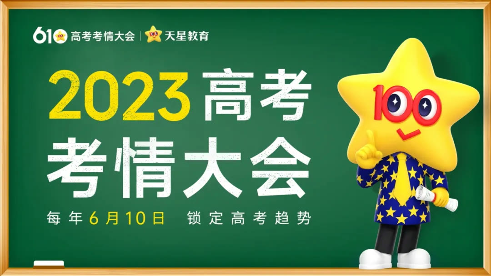
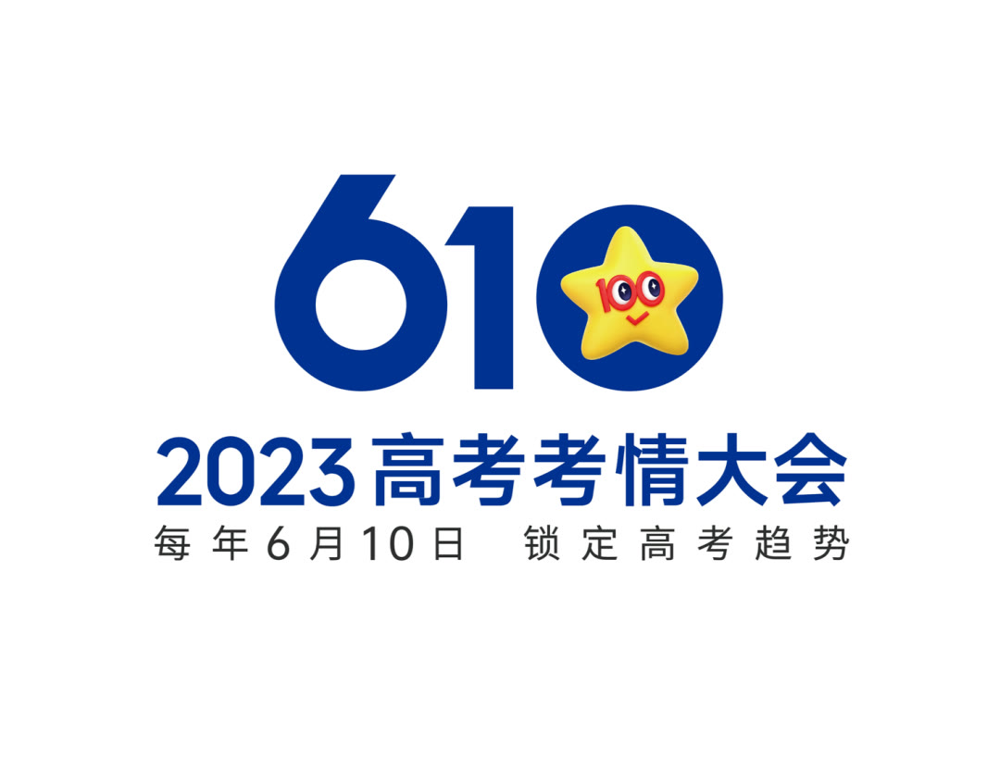
2023 年 6 月 10 日，由华与华和天星教育共同策划的公关产品“ 2023 高考考情大会”顺利举办并在全网免费直播。权威教育专家、全国百校名校名师、全网学科名师这一天齐聚一堂，在 2023 年高考之后第一时间共同为全国各地的老师、学生和家长们进行高质量的考情解读。同时， 6 月 11 日 10 : 00 — 18 : 00 及 6 月 12 日 18 : 00 — 22 : 00 ，在百度、抖音、视频号、 B站、小红书、快手、微博等平台进行新高考Ⅰ卷和全国乙卷语、数、英三大学科的试卷详解。天星也以此为开端推进一系列的备考会活动。
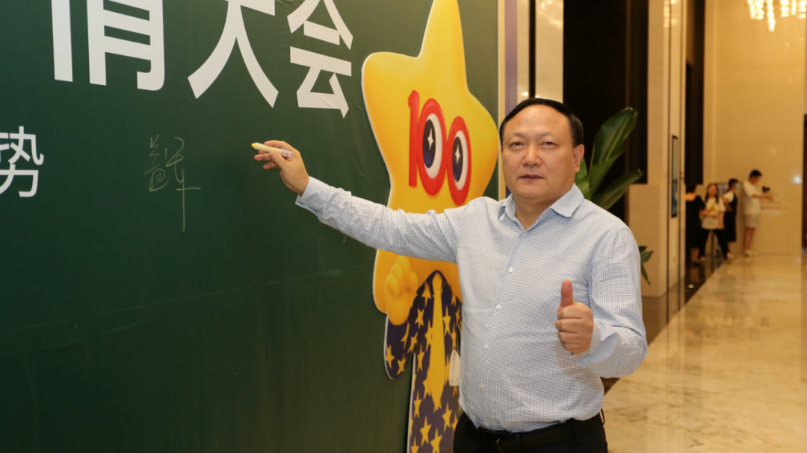
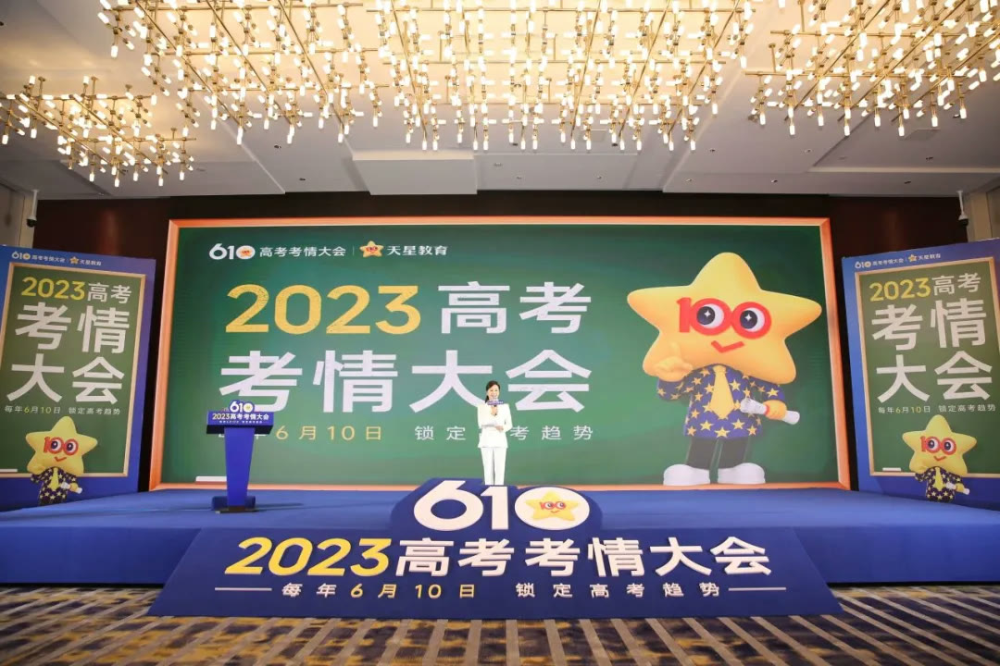
案例总结2022 年 8 月至今，一年多的时间里，华与华为天星教育完成品牌定型，让 25 年教辅大品牌焕然一新，并嫁接高考文化母体，聚焦高考教辅领域，夯实天星战略基本盘。1 、品牌谚语、超级符号、拳头产品再开发，完整构建品牌三角形，从多产品并举到统一归属天星教育，形成品牌资产积累的储蓄罐。
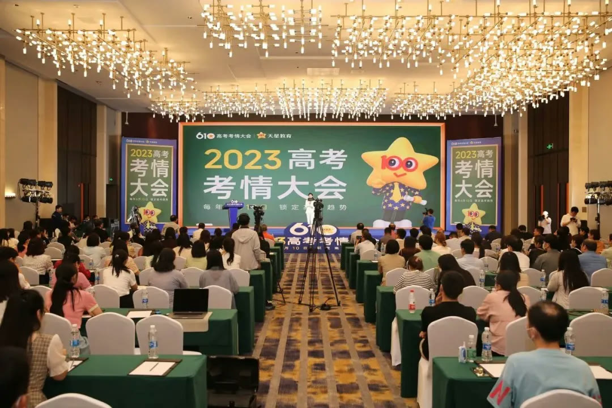
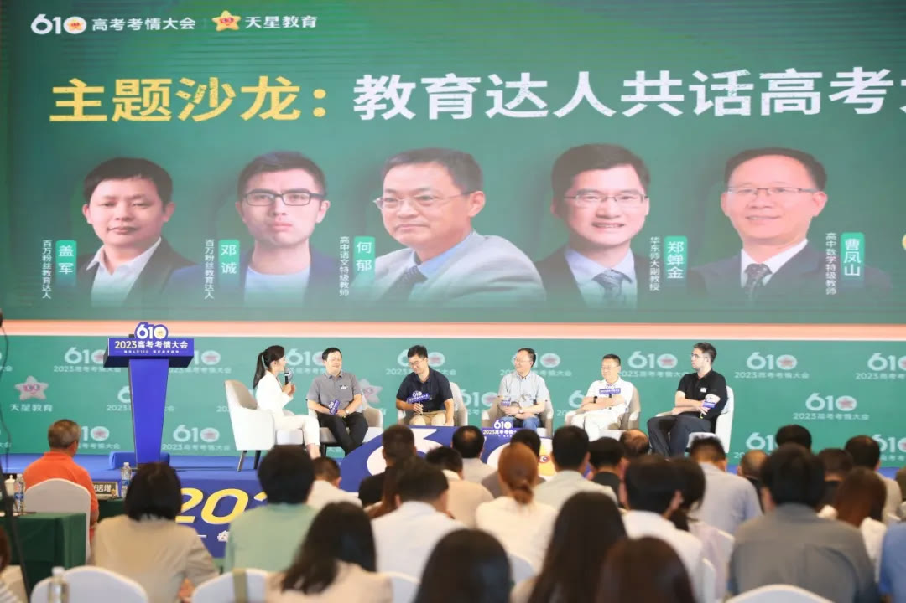
1 ）品牌谚语——上课认真听，下课练天星！2 ）超级符号——天星老师，“星星”+“ 100 、 ✔️ ”，发挥品牌与生俱来的戏剧性。3 ）拳头产品——首年度完成 13 款代表产品的再开发，从命名、到购买理由、到价值提炼，到流量互通的封面设计。创意“备战高考，先看天星刷题表”，降低学生/老师乃至家长选择天星的成本。2 、聚焦教室、老师办公室、校园周边书店元媒体，“两室一店”全面媒体化工程，强化天星在终端和用户中的影响力。3 、战略定心“天星高考”，开发“高考考情大会”公关产品，聚焦企业资源，修不败兵法，做到在高考教辅领域不可撼动！2022 年年底，天星品牌谚语、超级符号对外发布，官方公众号好评率 95 %以上。相比2022 年，在教辅图书行业绝大多数品牌营收下滑的情况下， 2023 年天星教育逆势增长！

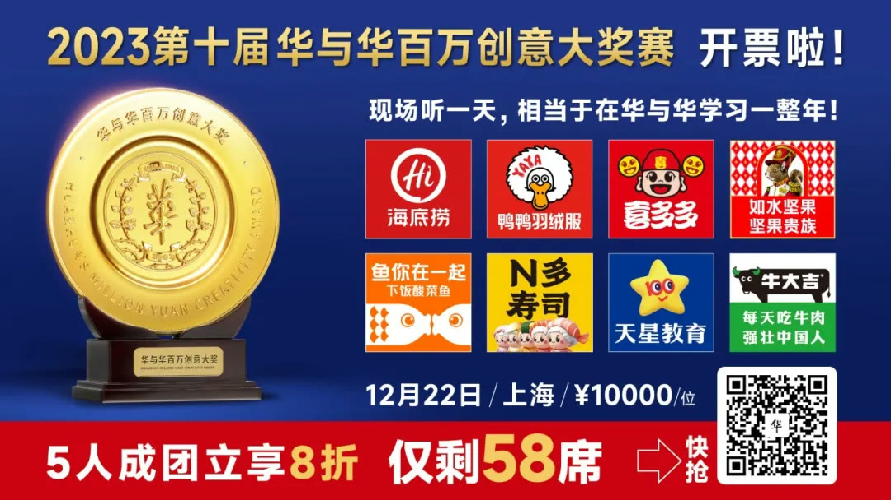